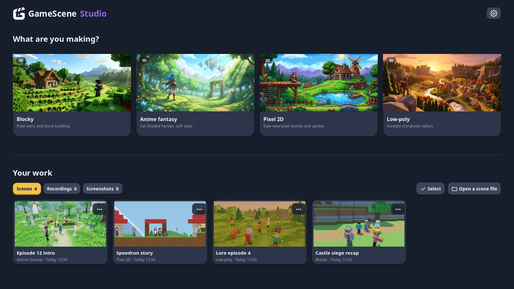
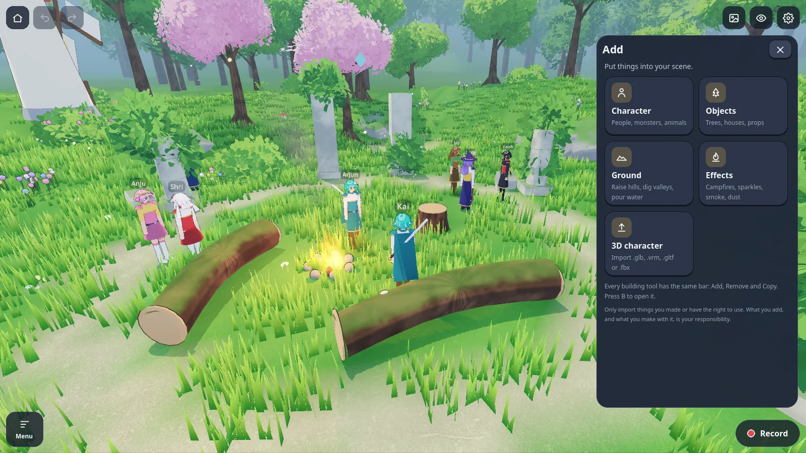
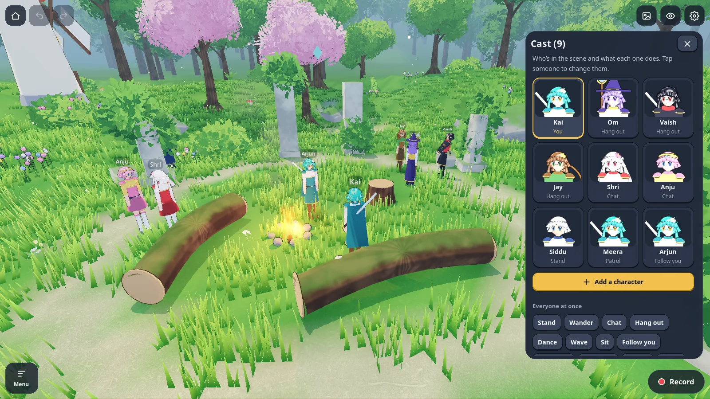

How it works
One scene, from blank to export.
Six steps in the order most creators take them. Every picture is the app itself.
Step
Pick a look
The home screen asks one thing: what are you making? Choose Blocky, Anime fantasy, Pixel 2D or Low-poly, name the scene, and start empty or from a template. Your scenes, recordings and screenshots sit below.


Step
Build the set
The Add menu holds everything that goes into a scene: characters, objects, ground tools and effects. Place a few trees, shape a hill, light a campfire. Undo covers all of it.


Step
Cast the scene
Add people, monsters and animals from the presets or import your own model. Tap a character to choose what they do, who their friends are and which pose they hold.


Step
Time the beats
Open the timeline and key the moments your narration calls for: a walk at four seconds, a wave at ten, a camera push at fourteen. Put your voiceover file on the sound row to time against it.

Step
Set the light and the shot
Choose a mood for the time of day and weather, then pick a camera. Cinematic shots orbit, dolly, crane or push in on any character.

Step
Export
Choose the frame, the size and the background, then export. The whole scene plays through its shot list and lands in your Videos folder, or your gallery on a phone.